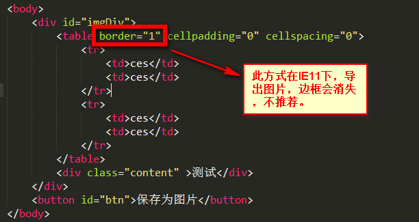
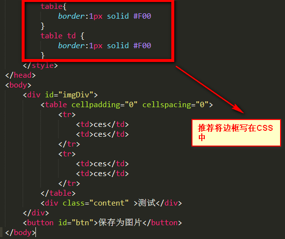

最近工作中遇到的需求，将div转成图片并保存。
1、准备需要用到的js插件jquery-1.8.2.js，html2canvas.min.js（将div转换为canvas），bluebird.js（用户IE支持ES6 Promise特性）
2、页面demo
<!DOCTYPE html>
<html lang="en">
<head>
<meta charset="UTF-8">
<title>div to img demo</title>
<style type="text/css">
.content{
display: block;
position: relative;
width: 300px;
height: 300px;
background-color: #E6B246
}
</style>
</head>
<body>
<div class="content" id="imgDiv">
<div>测试</div>
</div>
<button id="btn">保存为图片</button>
</body>
</html>3、遇到的问题
问题1：生成的图片模糊
解决方案：将canvas属性放大两倍，生成的时候再变回原来的1倍；
问题2：IE浏览器不支持ES6新特性，无法使用html2canvas插件生成画布
解决方案：引入bluebird.js，只需引入即可；
问题3：在执行保存时，如果直接使用html2canvas插件提供的，将生成的画布直接转换为base64的方法，将base64直接放到a标签的href属性中进行下载，当生成图片内容过多时，base64长度将超出a标签href长度限制，无法下载。
解决方案：将base64转换为Blob流
问题4：有些浏览器，比如火狐，不支持a标签直接下载
解决方案：还是使用Blob流下载
最终代码：
<script type="text/javascript">
$(document).ready(function(){
// canvas生成图片
$("#btn").on("click", function () {
var getPixelRatio = function (context) { // 获取设备的PixelRatio
var backingStore = context.backingStorePixelRatio ||
context.webkitBackingStorePixelRatio ||
context.mozBackingStorePixelRatio ||
context.msBackingStorePixelRatio ||
context.oBackingStorePixelRatio ||
context.backingStorePixelRatio || 0.5;
return (window.devicePixelRatio || 0.5) / backingStore;
};
//生成的图片名称
var imgName = "cs.jpg";
var shareContent = document.getElementById("imgDiv");
var width = shareContent.offsetWidth;
var height = shareContent.offsetHeight;
var canvas = document.createElement("canvas");
var context = canvas.getContext('2d');
var scale = getPixelRatio(context); //将canvas的容器扩大PixelRatio倍，再将画布缩放，将图像放大PixelRatio倍。
canvas.width = width * scale;
canvas.height = height * scale;
canvas.style.width = width + 'px';
canvas.style.height = height + 'px';
context.scale(scale, scale);
var opts = {
scale: scale,
canvas: canvas,
width: width,
height: height,
dpi: window.devicePixelRatio
};
html2canvas(shareContent, opts).then(function (canvas) {
context.imageSmoothingEnabled = false;
context.webkitImageSmoothingEnabled = false;
context.msImageSmoothingEnabled = false;
context.imageSmoothingEnabled = false;
var dataUrl = canvas.toDataURL('image/jpeg', 1.0);
dataURIToBlob(imgName, dataUrl, callback);
});
});
})
// edited from https://developer.mozilla.org/en-US/docs/Web/API/HTMLCanvasElement/toBlob#Polyfill
var dataURIToBlob = function (imgName, dataURI, callback) {
var binStr = atob(dataURI.split(',')[1]),
len = binStr.length,
arr = new Uint8Array(len);
for (var i = 0; i < len; i++) {
arr[i] = binStr.charCodeAt(i);
}
callback(imgName, new Blob([arr]));
}
var callback = function (imgName, blob) {
var triggerDownload = $("<a>").attr("href", URL.createObjectURL(blob)).attr("download", imgName).appendTo("body").on("click", function () {
if (navigator.msSaveBlob) {
return navigator.msSaveBlob(blob, imgName);
}
});
triggerDownload[0].click();
triggerDownload.remove();
};
</script>demo下载：div_to_img_demo
=============================分割线：20190928更新==============================
前两天@AJ灬 老哥在使用过程中发现，在IE11下，导出图片，table的边框不见了，其他浏览器可以。
经过验证，问题出在border上，如果border是放在HTML标签上设置的话，在IE11下，导出图片，边框就会消失。需要将border放在CSS里面设置，导出就没问题。
错误示范：
正确示范：